You have been summoned to this world, brought by a mysterious masked magician, who gives you the mission 'Defeat the "Generaiders", the kings who rule the Nine Realms', using the "Runick" power of the gods themselves. The powers of the "Runicks" grow by defeating the "Generaiders", unlocking various new ones. In the beginning, you should aim for weak monsters and polish your skills, learning how to wield your magical sword. Also, the "Runicks" lose their radiance after repeated use, so they must be dipped into the "Fountain" to regain their glow.
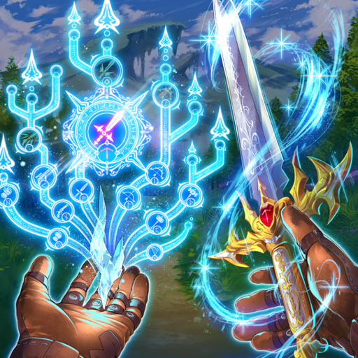
At fountains located throughout various regions, you can recover your strength and recharge your "Runicks". But who was it that created these fountains?
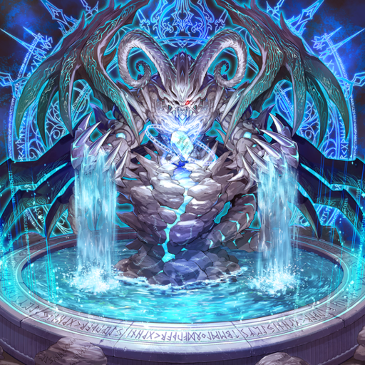
Shoot Through the Wings of the "Generaider" with the "Runick" Rapid Fire In the 'Divine Realm' that you visit early on dwells the "Generaider Boss of Swords", who excels in speed, and its loyal envoys. Since it can fly through the air as it wants, you should focus on speed as well, firing "Runick" solar heat bullets and defeating its envoys. If you can take out their wings, you'll have a huge opportunity to beat it.
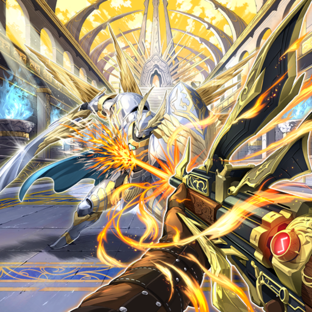
"Destruction" is Effective Against the Divine Giant The castle gates of the "Generaider" of the Divine Giant can only be destroyed by a tempered "Runick" punching attack. However, beware the illusions cast by the "Generaider Boss of Delusions" that lays inside the castle walls.
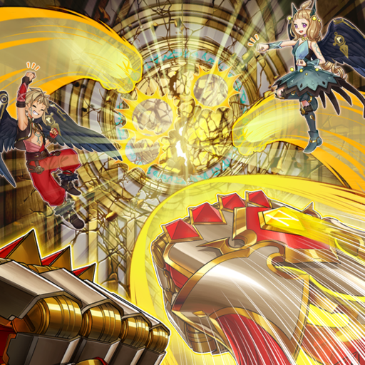
Fight Fire with Ice After crossing the burning molten river, you will face the "Generaider Boss of Fire", against whom you will absolutely need the "Runick" ice arrows. The damage inflicted by the demonic beasts in this realm is massive, so be prepared.
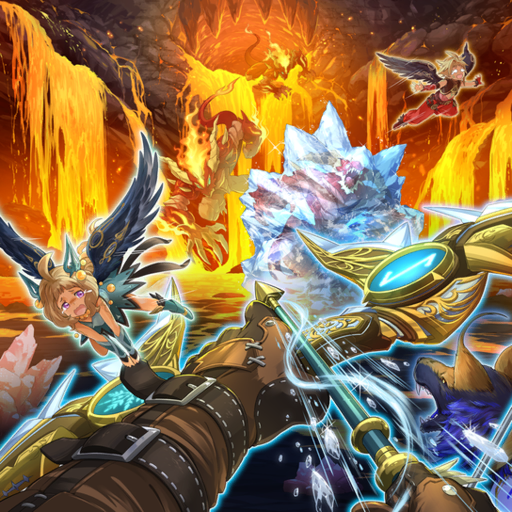
Fight with the "Runick" Fae by your Side The fae can inform you about items scattered throughout the realms, and can assist you in battle by consuming the radiance of the "Runicks". If you befriend them, your adventure will be much easier.
By exploring the Temple of the Raven Deity, you'll find two imprisoned fairies, and if you help them, they'll accompany you on your journey as familiars of sorts.
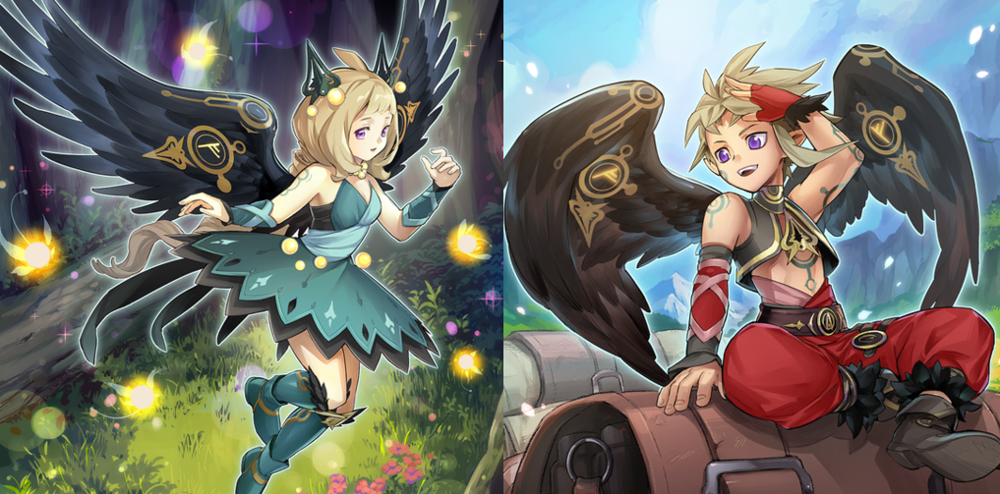
There are two wolves always roaming the realms that can be summoned by consuming the radiance of the "Runicks", making them rush to the battlefield and provide support.
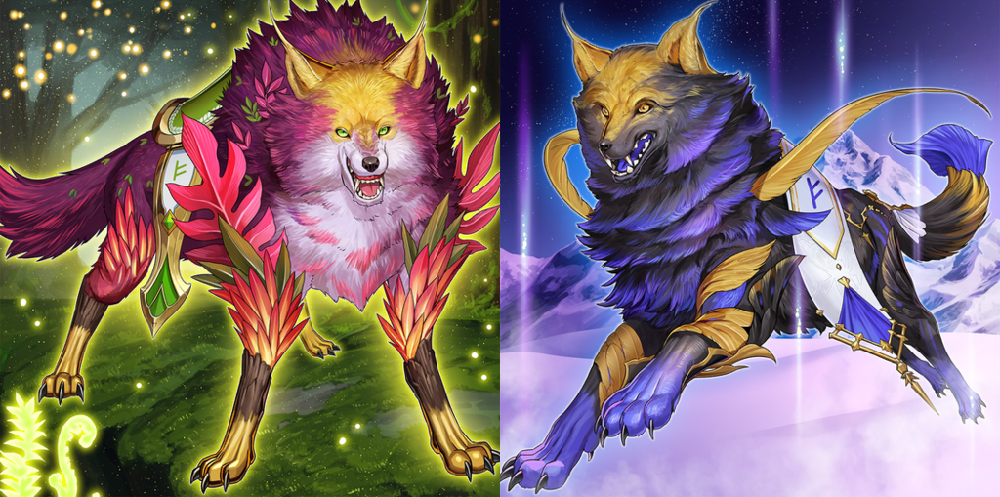
Use the Golden Bracelet to Reach the "Generaider" In order to obtain the Golden Bracelet you will need for your adventure, you must enter the lair of the Wicked Dragon. There are two ways to deal with it: either fight it or put it to sleep. The sleep-inducing "Runick" tones should help you snatch the bracelet from right under the Wicked Dragon's nose. But if you want its vast horde of gold, you'll have to face it head-on.
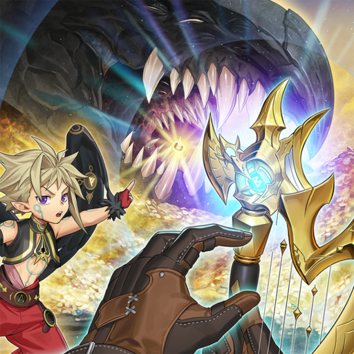
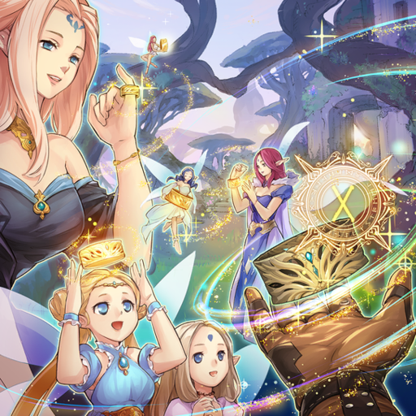
If you challenge the "Generaider" with your allies, you will encounter unexpected threats and dangers. Besides making sure you have anti-ice strategies, in general, do a lot of careful pre-prep.
After defeating the "Generaider Boss of Light", you obtain a necklace that has the power to break curses. By helping the meek and the powerless along the way to the "Generaider Boss of Ice" by breaking their curses, they will band together as allies and comrades later.
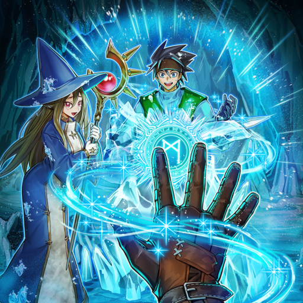
It's also possible to quickly make your way to the Queen's mansion by using the strongest attack of the Storm Hammer, which deals Area-of-Effect damage.
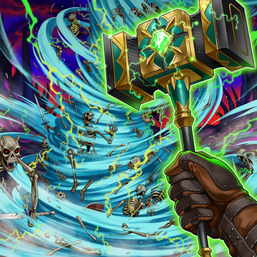
The dead of the underworld revive again and again by the Curse of Immortality unleashed by the "Generaider Boss of Doom", gradually increasing in number. The easiest way to deal with this is to shatter the curse, but if you haven't developed your skills enough, you'll be left with a dilemma.
After defeating all of the nine "Generaiders", upon visiting the great stone chest, the masked magician removes his mask, giving a reverent bow. «I apologize for the long, ceaseless journey I have put you through. But thanks to your efforts, the seal upon the chest has been broken.» What lies beyond is an Extra Stage. What kind of "Generaiders" await!?
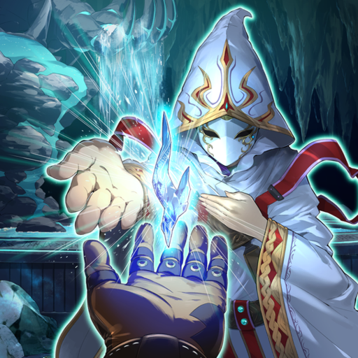
When you defeat the "Generaider" of each realm, the Magician appears at the "Fountain", offering various rewards. Prioritize choosing necessary ones, such as a horse that can ride through the sky, in order to progress through your adventure.
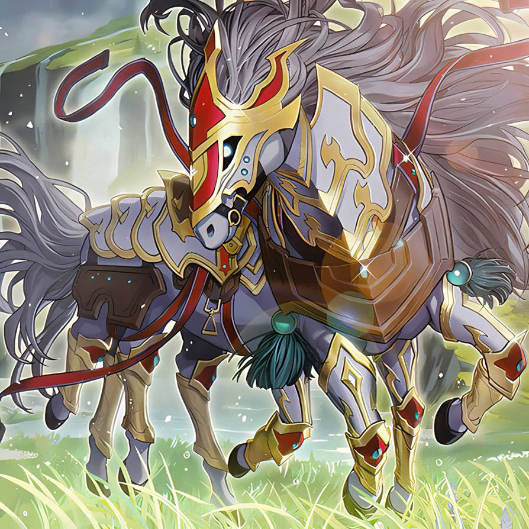
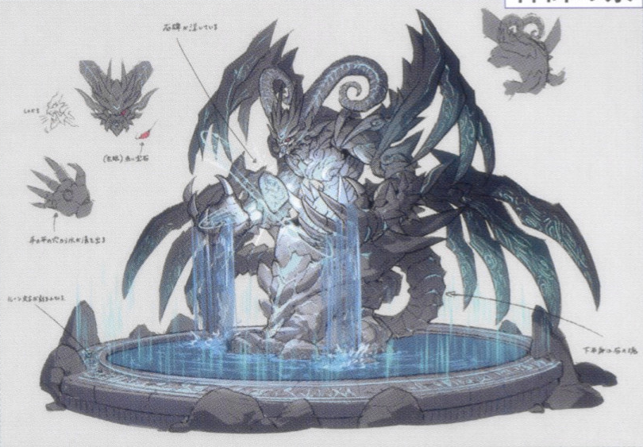
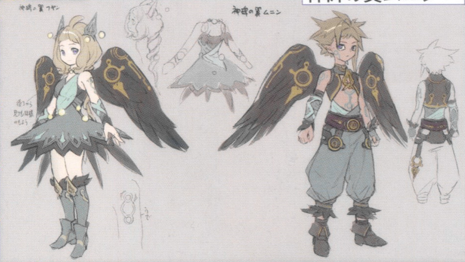